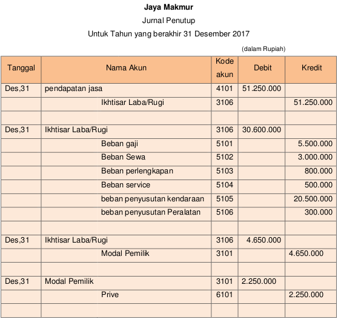
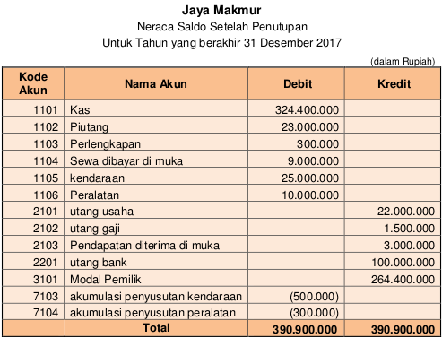
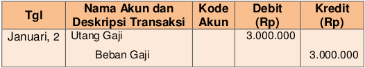
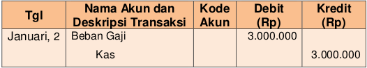
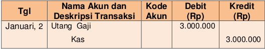
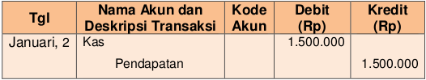
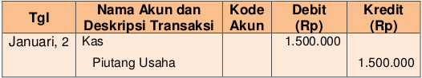
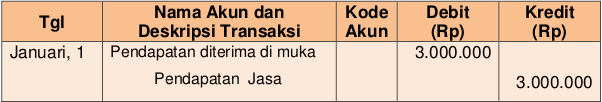
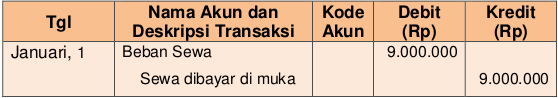
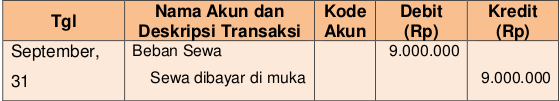

JURNAL PENUTUP DAN JURNAL PEMBALIK
Jurnal penutup adalah jurnal yang dibuat pada akhir periode, digunakan untuk menutup atau memindahkan saldo akun sementara atau nominal ,yaitu pendapatan dan beban .
Langkah-langkah dalam membuat jurnal penutup adalah sebagai berikut:
a. Menutup akun pendapatan dengan cara memindahkan saldo setiap akun pendapatan ke Akun Ikhtisar Laba Rugi.
b. Menutup akun beban dengan cara memindahkan saldo setiap akun beban ke Akun Ikhtisar Laba Rugi.
c. Menutup Akun Ikhtisar Laba Rugi dengan cara memindahkan saldo Akun tersebut ke Akun Modal.
d. Menutup Akun-akun Pengembalian Ekuitas (jika ada) ke Akun Modal/Laba Ditahan.
Berikut ini contoh jurnal penutup
Setelah menutup akun-akun Laba/Rugi selanjutnya yaitu menyusun daftar saldo setelah penutupan. Daftar saldo setelah penutupan ini akan menjadi daftar saldo awal bulan berikutnya.
JURNAL PEMBALIK
Dalam akuntansi, pemuatan ayat jurnal pembalik (reversing entries) adalah sifatnya pilihan. Jurnal pembalik ini biasanya akan dibuat pada setiap awal periode akuntansi dengan cara membalik jurnal penyesuaian yang telah dibuat apa akhir periode akuntansi sebelumnya. Ada 4 hal (item) yang perlu dibuatkan jurnal pembalik, yaitu: Utang beban, pendapatan yang masih harus diterima, pendapatan diterima di muka yang dicatat sebagai pendapatan, beban dibayar di muka yang yang langsung dicatat sebagai beban.
Berikut ini contoh-contoh jurnal pembalik yang masih terkait dengan perusahaan “Jaya Makmur”b>
a. Utang Beban
Berikut ini adalah contoh untuk mencatat jurnal pembalik atas penyesuaian tanggal 31 Desember 2017 Terkait Utang gaji
Kemudian saat gaji dibayarkan pada tanggal kesepakatan yaitu tanggal 2 Januari 2018 maka jurnal akan menjadi:
Namun, jika seandainya jurnal pembalik tidak ada maka jurnal yang harus dibuat pada tanggal 2 Januari 2018 akan menjadi sebagai berikut:
b. Piutang pendapatan atau pendapatan yang masih harus diterima.
Jurnal pembalik yang seandainya dibuat pada tanggal 1 Januari 2018 akan menjadi:

Kemudian saat piutang dibayarkan oleh pelanggan pada tanggal yang telah disepakati yaitu tanggal 2 Januari 2018 maka jurnal akan menjadi:
Namun, jika seandainya jurnal pembalik tidak ada maka jurnal yang harus dibuat pada tanggal 2 Januari 2018 akan menjadi sebagai berikut:
c. Pendapatan diterima di muka yang dicatat menggunakan pendekatan pendapatan (diakui sebagai pendapatan)
Pendapatan diterima di muka merupakan pendapatan atas suatu penjualan barang/jasa namun barang/jasa tersebut belum diserahkan atau dilaksanakan, yang pada saat penerimaan dicatat sebagai pendapatan bukan sebagai utang.
Contoh:
Misalkan pada tanggal 1 Desember Jaya Makmur mencatat pendapatan diterima di muka langsung diakui sebagai pendapatan maka jurnal pembalik pada tanggal 1 Januari 2018 adalah sebagai berikut:
Namun, jika seandainya jurnal pembalik tidak ada maka jurnal yang harus dibuat pada tanggal 31 Mei 2018 akan menjadi sebagai berikut
d. beban dibayar di muka yang dicatat menggunakan pendekatan beban (diakui sebagai beban)
beban dibayar di muka merupakan pengeluaran dana (dapat berupa uang/barang) untuk mendapatkan atau memanfaatkan suatu barang/jasa namun barang/jasa tersebut belum digunakan atau baru akan digunakan atau dimanfaatkan di masa yang akan datang, yang pada saat pembayaran dicatat sebagai beban bukan aset.
Contoh:
Misalkan pada tanggal 1 Desember 2017 Jaya Makmur mencatat pembayaran sewa langsung diakui sebagai beban maka jurnal pembalik pada tanggal 1 Januari 2018 adalah sebagai berikut:
Namun, jika seandainya jurnal pembalik tidak ada maka jurnal yang harus dibuat pada tanggal 31 November 2018 akan menjadi sebagai berikut
